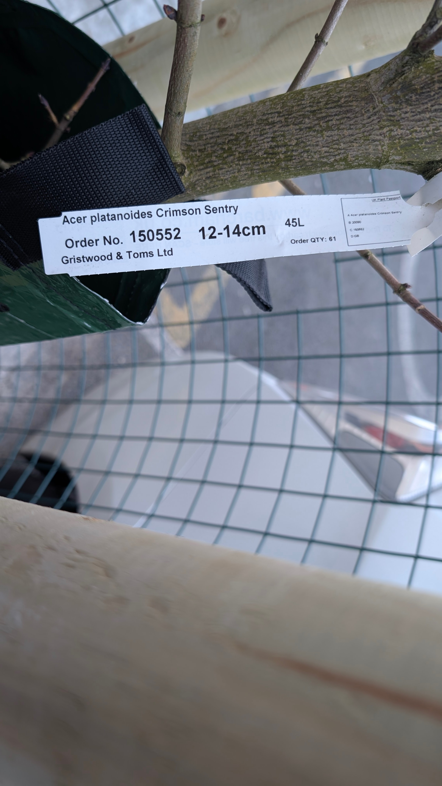
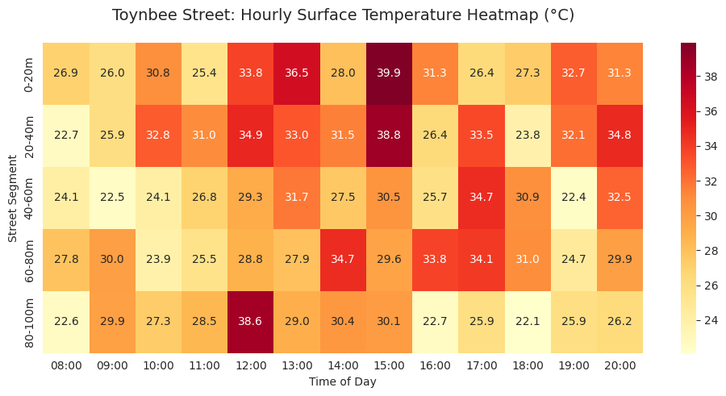
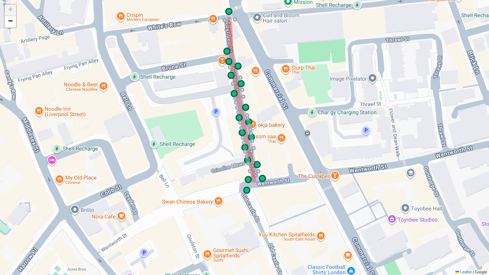

🌳 0. Implementation: March 2026
First Crimson Sentry trees successfully planted in Toynbee Street. These specimens represent the first phase of the Optimal 18 strategy.



Data-Driven Advocacy for Green Infrastructure in Spitalfields (London E1)
Target: 30 Signatures to trigger formal Council Response
First Crimson Sentry trees successfully planted in Toynbee Street. These specimens represent the first phase of the Optimal 18 strategy.

Spitalfields is a localized "heat trap." Peak summer temperatures discourage active transport and impact health.

Figure 1: Hourly surface temperature simulation.Analysis confirms that higher canopy cover correlates with reduced crime and increased cycling across London wards.
 Figure 2: Statistical correlation between canopy, safety, and transport.
Figure 2: Statistical correlation between canopy, safety, and transport.
We filtered 45 surveyed points down to 18 optimal pits using an 8.5m spacing algorithm to maximize cooling while avoiding utility clusters.

Figure 3: Selected 18-pit layout.